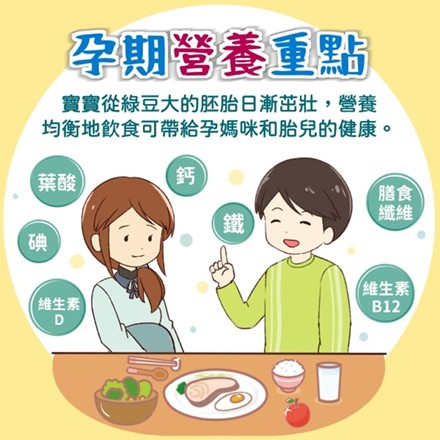
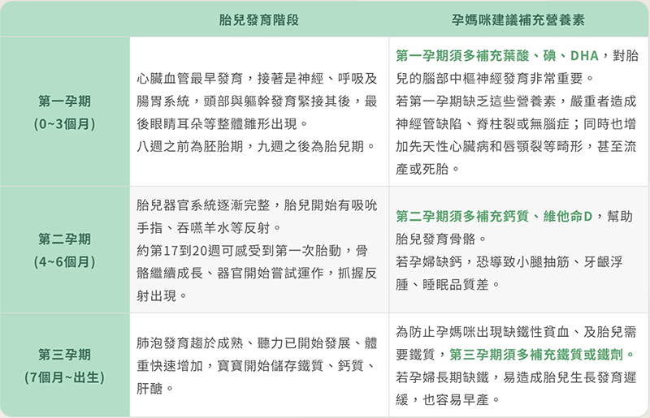
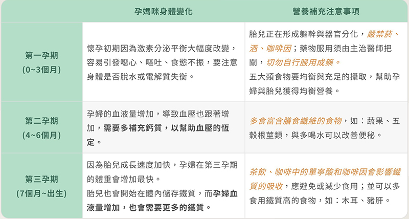
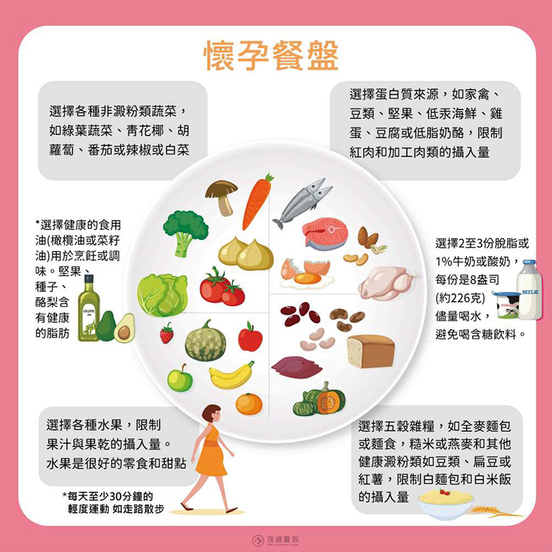

月號－哺乳育嬰站
月號－哺乳育嬰站根據國民健康署的106-109年度「國民營養健康狀況變遷調查」之統計，育齡婦女中血清葉酸接近正常濃度下限值有10.9%，尿液碘低於標準下限有40%，貧血盛行率有19.1%（其中13.7%為缺鐵性貧血），而維他命D不足有41.3%。上述任一懷孕期間營養素不足將影響胎兒的正常發育。母體營養狀況不佳與胎兒生長異常有關，包括： 這些都會增加媽媽跟寶寶的慢性病風險。根據英美兩大開發國家最新的營養指引，在懷孕前和懷孕期間「健康的飲食模式」可適度降低妊娠糖尿病、妊娠高血壓、寶寶體重過重和早產的風險。 |
||||||||||||||||||||||||||||
|  |
||||||||||||||||||||||||||||
| 幫助胎兒成長發育的各孕期營養補充重點 | ||||||||||||||||||||||||||||
|  | ||||||||||||||||||||||||||||
| 孕期6大營養品功用、攝取量，可選的食物來源 | ||||||||||||||||||||||||||||
|
||||||||||||||||||||||||||||
| 孕期三階段對孕媽咪的變化? 營養補充須注意什麼？ | ||||||||||||||||||||||||||||
|  | ||||||||||||||||||||||||||||
| 孕媽咪聰明選食物，吃對營養孕期好健康 | ||||||||||||||||||||||||||||
|  | ||||||||||||||||||||||||||||
| 懷孕一定要吃保健食品嗎？聽聽醫師怎麼說 | ||||||||||||||||||||||||||||
懷孕不一定要吃保健食品，透過食用原型食物和攝取大量的蔬菜、水果、全穀物、堅果、豆類、魚，以及富含單不飽和脂肪的油和纖維，選擇脂肪含量較低的紅肉，不吃保健食品也能也可以補充到足夠的營養素。不過，如果不清楚自己吃下去的食物有沒有足夠的營養素，補充孕婦保健品也是一種選項。 懷孕晚期孕婦的鐵質需求較高，建議可以根據主治醫師的指示來補充鐵劑。若孕期有產生併發症如子癲前症危險族群、甲狀腺疾病者，建議詢問醫師或營養師來設計菜單，以免疾病隨著孕期而加重。 為了支持胎兒健康發育與媽媽自身營養所需，建議孕期女性應依照各階段的營養重點，選擇適當的天然食材，必要時可搭配保健食品，並於醫師與營養師指導下進行補充，確保營養攝取達到均衡且安全。 |
||||||||||||||||||||||||||||
資料來源
1.孕期營養品怎麼吃？醫師談三個階段的孕婦保健食品順序！ |